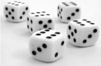
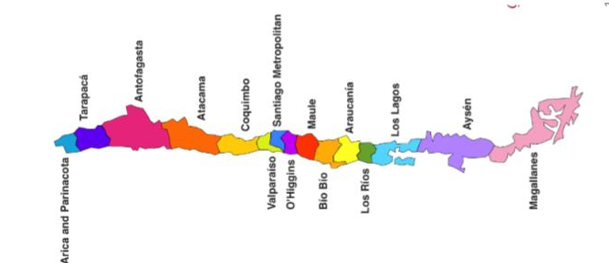

1. Elementos Básicos de Teoría de Probabilidades#
Teoría de Probabilidades
Modelamiento de fenómenos aleatorios (por ejemplo, lanzamiento de un dado, el tiempo) 
Fundamento de la estadística que es la recolección, organización, análisis, interpretación y presentación de datos.
{kind=link}
Experimento, Espacio Muestral, Evento, Elemento
Experimento: (una realización de un) fenómeno aleatorio
Espacio Muestral (\(\Omega\)): conjunto de todos los posibles valores que puede tomar un experimento.
Evento (\(A\)): cualquier subconjunto del espacio muestral. Un evento puede tener uno o múltiple elementos.
Ejemplos: “mañana estará soleado en Valdivia”. “>8 caras en 10 lanzamientos de una moneda”,
Elemento or resultado de la muestra (\(\omega\)): cada punto o valor en el espacio muestral.
Ejemplo 1:
Experimento: el lanzamiento de una moneda una vez
\(\Omega\) = {C,S} (C:cara, S:sello)
El evento que el lanzamiento es una cara es A = {C}
El resultado de un experimento donde el lanzamiento es una caba es \(\omega\) = C
Ejemplo 2: Si lanzamos una moneda dos veces, entonces
Experimento: el lanzamiento de una moneda dos veces
\(\Omega\) = {CC,CS,SC,SS}
El evento que el primer lanzamiento es una cara es A = {CC,CS}
El resultado de un experimento donde ambos lanzamientos son caras es \(\omega\) = CC
1.1. Probabilidades#
¿Qué tan posible es que un evento ocurra?
La probabilidad es un lenguaje matemático para cuantificar la incertidumbre.
El grado de posibilidad de la ocurrencia de un evento que resulta de un experimento estadístico se evalúa utilizando un conjunto de números reales denominados probabilidades, que van de 0 a 1 (inclusivo).
¿Cómo asignamos valores de probabilidad?
Volvamos al ejemplo del lanzamiento de la moneda una vez, cuál es la probabilidad de que tengamos una cara?
Si la moneda es justa
Si la moneda no es justa, pero no sabemos qué tan injusta es
Si te digo que la moneda tiene una cara tipo 90% del tiempo, pero no estoy segura?
Tenemos tres maneras para calcular la probabilidad:
\(\textbf{Enfoque clásico}\): Sea \(n(A)\) el número de elementos en el evento \(A\), y \(n(\Omega)\) el número de elementos en el espacio muestral \(\Omega\), entonce \(P(A) = \frac{n(A)}{n(\Omega)}\). Se supone que todos eventos elementales (eventos que solo tienen un elemento) son igualmente probables.
\(\textbf{Enfoque frecuentista}\): Frecuencias observadas al repetir muchas veces un experimento. Sea \(n\) el número de experimentos, y \(n(A)\) el número de veces que el evento \(A\) ocurre en la realización de esos experimentos, entonces \(P(A) = \frac{n(A)}{n}\).
\(\textbf{Enfoque Bayesiano}\): Incertidumbre subjetiva, grado de creencia (probabilidad a priori) que es revisado por la observación (probabilidad a posteriori).
Ejemplo: Yo pienso que hay 0.9 de probabilidad de que el lanzamieno es una cara.
Para obtener la probabilidad a priori, podríamos usar la definición clásica antes de realizar un experimento.
1.1.1. Definición Formal de Probabilidad#
Definición
Sean:
\(\Omega = \{\omega_1, \omega_2, ..., \omega_m\}\)
\({\cal P}(\Omega) = \{\phi, \{\omega_1\}, \{\omega_2\}, ..., \{\omega_1, \omega_2\}, \{\omega_1, \omega_3\}, ..., \Omega\}\)
\({\cal P}(\Omega)\): el conjunto potencia o conjunto de las partes del conjunto \(\Omega\) formado por todos los subconjuntos de \(\Omega\).
Una probabilidad \(P\) es una función que cumple:
\(\begin{array}{cc} P:& {\cal P}{(\Omega)} \to [0,1] \\ &A \to P(A) \end{array}\)
(es decir, \(P\) asigna a cada evento \(A\) (cualquier subconjunto de \(\Omega\)) en el espacial muestral \(\Omega\) un número real entre 0 y 1 \(P(A)\).)
que cumple lo siguiente (tres axiomas de Kolmogórov):
\(\begin{array}{ll} 1. & \forall A \subset \Omega, P(A) \geq 0 \quad \text{(axioma 1)}\\ 2. & P(\Omega) = 1 \quad \text{(axioma 2)}\\ 3. & Sean \,\, A_1,...,A_n \subseteq \Omega, A_i \cap A_j =\phi, \forall i,j=1...n , i \neq j \\ & => P(A_1\cup...\cup A_n) = P(A_1)+...+P(A_n) \quad \text{(axioma 3)} \end{array}\)
En el último axioma, los eventos son mutuamente excluyentes o disjuntos (no tienen elementos en común).
Propiedades
Las siguientes propiedades se deducen de los axiomas de Kolmogórov mencionados arriba.
\(\forall A,B \subseteq \Omega\),
\(P(A) = 1 - P(A^C)\) \(\qquad\) (regla del complemento)
\( P(\phi) = 0\) \(\qquad\) (probabilidad del conjunto vacío)
Si \(A \subseteq B => P(A) \leq P(B)\) \(\qquad\) (monotonía)
\( P(A) \leq 1 \) \(\qquad\) (límite numérico)
\( P(A \cup B) = P(A) + P(B) - P(A \cap B)\) \(\qquad\) (regla de adición)
Podemos usar Teoría informal de conjuntos y Diagrama de Venn para demonstrar las propiedades.
1.1.2. Probabilidades condicionales#
Sean \(A, B \subseteq \Omega\), si \(P(B)>0\), se define:
\(\begin{array}{lll} P(A\mid B) & = &\frac{P(A \cap B)}{P(B)} \end{array}\)
Si además se cumple que \(P(A)>0\), se tiene:
\(\begin{array}{lll} P(A\cap B)& = &P(A\mid B)P(B) = P(B\mid A)P(A) \quad \text{(regla de muliplicación)} \end{array}\)
Esto se puede extender a mas eventos:
\(\begin{array}{lll} P(A\cap B \cap C)& = &P(A)P(B\mid A) P(C\mid A \cap B) \end{array}\)
siempre que \(P(A), P(A\cap B)> 0\)
1.1.3. Independencia#
¿Cómo determinar que dos eventos son independientes?
Sean \(A, B \subseteq \Omega\) con \(P(A),P(B) >0\), si cualquiera de las siguientes condiciones se cumple:
\(P(A\cap B) = P(A)P(B)\)
\(P(A\mid B) = P(A)\)
\(P(B\mid A) = P(B)\)
se dice que \(A\) es independiente de \(B\).
1.1.4. Independencia Condicional#
¿Cómo determinar que dos eventos \(A\) y \(B\) son independientes dados un tercer evento \(C\)?
Sean \(A, B, C \subseteq \Omega\) con \(P(A\cap C),P(B\cap C), P(C)>0\), si cualquiera de las siguientes condiciones se cumple:
\(P(A\cap B \mid C) = P(A\mid C)P(B\mid C)\)
\(P(A\mid B \cap C) = P(A \mid C)\)
\(P(B\mid A \cap C) = P(B \mid C)\)
se dice que \(A\) es independiente de \(B\) condicionalmente a \(C\).
Ejemplo: Altura, Vocabulario y Edad
1.1.5. Ley de las Probabilidades totales#
Consideremos ahora una partición del espacio muestral \(\{B_i\}_{i=1,..n}\), es decir:
\(\begin{array}{lll} \bigcup_{i=1}^n \limits B_i = \Omega, & & B_i\cap B_j = \phi \qquad \forall i,j=1,..n, i\neq j \end{array}\)
entonces:
\(\begin{array}{lll} P(A) & = & \sum_{i=1}^n \limits P(A\mid B_i) P(B_i) \end{array}\)
Ejemplo: Sea \(A\) = {Pedro acepta trabajo en Chile} y \(B_i\) = {Oferta de trabajo para Pedro en region \(i\) }, \(i=1,...,15\)
{kind=link}
1.1.6. Regla de Bayes#
A partir de la defición de probabilidades condicionales se puede deducir la regla de Bayes:
Sean \(A, B \subseteq \Omega\) tales que \(P(A),P(B)>0\), entonces
\(\begin{array}{lll} P(B\mid A)& = & \frac{P(A\mid B) P(B)}{P(A)} \end{array}\)
\(P(B)\) se denomina probabilidad a priori, \(P(B \mid A)\) probabilidad a posteriori
1.1.7. Teorema de Bayes#
Consideremos una partición del espacio muestral \(\{B_i\}_{i=1,..n}\), entonces:
\(\begin{array}{lll} P(B_i \mid A) & = & \frac{P(A\mid B_i) P(B_i)}{P(A)} & = & \frac{P(A\mid B_i) P(B_i)}{\sum_{i=1}^n \limits P(A\mid B_i) P(B_i)} \end{array}\)